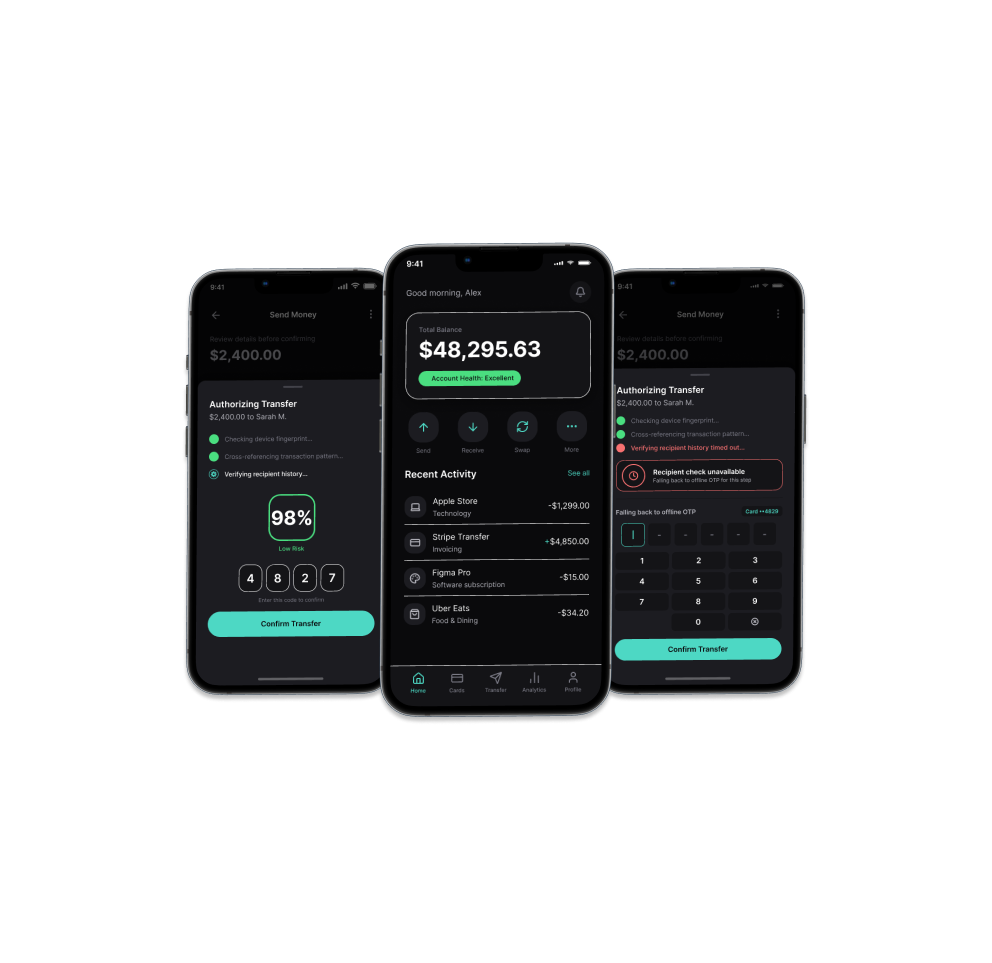

Tomaan

Project Details
Overview
Designing for authentication and personal finance at scale requires more than just functional UI; it demands a system built on absolute trust. Drawing from the foundational architecture of legacy offline OTP systems that successfully secured transactions for roughly 7 million users across multi-tenant banking ecosystems, Tomaan represents the 2026 evolution of financial security.
As financial platforms transition from deterministic software to probabilistic AI models, Tomaan was built from the ground up to address the unique UX challenges of generative interfaces.
Designing for Latency & Temporal UX
Generative AI introduces unavoidable latency. In high-stakes financial environments, relying on static loading spinners during a 1-to-8 second LLM inference call destroys user confidence and creates the assumption that the application is broken.
Active Wait Ambiguity Management
Tomaan actively manages LLM latency through deliberate, interactive feedback loops to keep users visually engaged and maintain systemic trust while background data is generated.
By pairing structural skeleton screens with typewriter-effect streaming text, the interface creates a progress narrative. Instead of viewing a frozen indicator, the user observes the conceptual thoughts and fraud check nodes compiling in real time, reducing perceived wait times.
Visual Confidence & The Aesthetic of Security
AI applications generate rather than display, requiring a paradigm shift in how certainty is communicated.
Certainty Metrics & Frosted Glassmorphism
Tomaan integrates strict visual confidence indicators to communicate the AI's certainty regarding fraud detection and transaction integrity.
Aesthetically, the platform abandons legacy banking patterns in favor of a true black base surface layered with translucent frosted panels. This not only reduces eye strain during extended generative sessions but establishes a premium, highly secure environment.
Graceful Degradation & Systemic Resilience
A scalable financial product must account for edge cases beyond the idealized "happy path."
Graceful Offline Failsafes
Tomaan is engineered for graceful degradation, explicitly accounting for AI outages, unexpected outputs, or confident-sounding hallucinations.
If the generative security layer falters, the application is designed to seamlessly fall back to a bulletproof, offline authentication failsafe (drawing from our legacy offline OTP mechanisms), ensuring the user is never left stranded by technological failure.